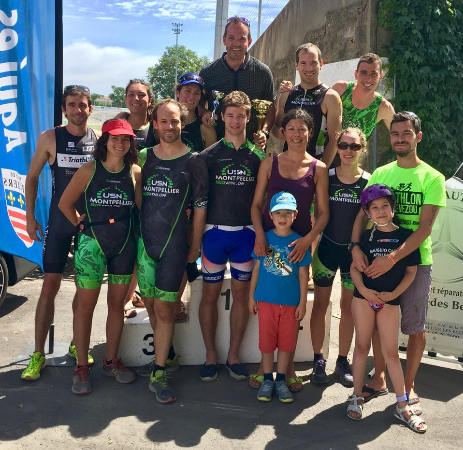

Curriculum Vitae
August 20th, 2019. Pierre-Edouard GUERIN
Coordenadas
- E-mail: pierre.edouard.guerin [at] gmail.com
- Teléfono: (+33) 04 67 61 32 35
Experiencia profesional
Ingeniero en bioinformática
CNRS UMR 5175, Centro de Ecología Funcional y Evolutiva, Montpellier, Francia
Desarrollo informatico para el análisis y la visualización de mega-datos de la secuenciación de ADN de alto rendimiento (genómica, ADN ambiental). También aseguro la vigilancia tecnológica para implementar nuevos métodos de procesamiento de datos y optimizar la reproducibilidad científica.
python R C++ Singularity Docker SGE SLURM Snakemake Nextflow Jupyter notebookAprendiz de bioinformática
INSERM UMR S598, Genética de las diabetes, París
Desarrollo de nuevas funcionalidades para un programa informático dedicado a la detección y anotación de variantes genéticas raras a partir de datos de secuenciación del genoma humano.
python Qt mySQL DockerAprendiz de bioinformática
INSERM UMR S1134, Estructura, dinámica e interacciones de las macromoléculas en biología, París
Diseño y desarrollo de un nuevo algoritmo para mejorar la predicción del modelado 3D de las estructuras proteínicas a resolución atómica.
C C++ postgreSQL HTML CSS JavascriptEducación
- 2016: Master de Bioinformática, Universidad Paris Diderot Paris 7, Francia
- 2014: Licencia de Bioinformática, Universidad de París Diderot París 7, Francia
Proyectos


Softwares
- WFGD (principal contribuyente) : mapa interactivo de la diversidad genética de los peces del mundo.
- vcfsynonymous (principal contribuyente) : software codificado en python para la detección de variantes genéticas sinónimas a partir de datos de secuenciación y anotación del genoma.
- Rgeogendiv (principal contribuyente) :Paquete R para descargar, preparar y alinear secuencias de ADN georreferenciadas en Genbank para calcular la diversidad genética a diferentes escalas geográficas.
- Workflow analyse metabarcoding ADN environnemental (principal contribuyente y mantenedor): es utilizado por la empresa SPYGEN, el instituto ETH de Zúrich y la misión de exploración marina de Mónaco.
- Workflow génotypage génomes réduits RAD-seq (principal contribuyente y mantenedor) : análisis de más de 3000 genomas de peces para el proyecto europeo RESERVEBENEFIT en colaboración con el Helmholtz-Zentrum für Ozeanforschung Kiel y el Instituto Español de Oceanografía.
- Genbar2 (principal contribuyente) : continuación del programa informático Genbar1 desarrollado en los años 90, que originalmente permitía asignar poblaciones genéticas a partir de datos de microsatélites. La versión 2 que desarrollé en C++ puede analizar datos de secuenciación de nueva generación gracias a la biblioteca htslib.
- ExAM (contribuyente) : software python con interfaz gráfica que analiza automáticamente las secuencias de exones para anotar variantes. El programa informático fue utilizado por los médicos de nuestro laboratorio para acelerar sus análisis genéticos.
- ORION (contribuyente) : método para detectar los patrones de estructura de las proteínas.
Publicaciones científicas
Blind assessment of vertebrate taxonomic diversity across spatial scales by clustering environmental DNA metabarcoding sequences
Virginie Marques, Pierre‐Edouard Guerin, Mathieu Rocle, Alice Valentini, Stephanie Manel, David Mouillot, Tony Dejean
Ecography. 2020 Aug 04. DOI: 10.1111/ecog.05049
New genomic ressources for three exploited Mediterranean fishes
Katharina Fietz Elena Trofimenkoa Pierre-Edouard Guerin Veronique Arnal, Montserrat Torres-Oliva, Stephane Lobreaux,Angel Perez-Ruzafa, Stephanie Manel, Oscar Puebla
Genomics. 2020 July 03. DOI: 10.1016/j.ygeno.2020.06.041
Global determinants of freshwater and marine fish genetic diversity
Stephanie Manel, Pierre-Edouard Guerin, David Mouillot, Simon Blanchet, Laure Velez, Camille Albouy & Loic Pellissier
Nature communications. 2020 Feb 10. DOI: 10.1038/s41467-020-14409-7
Predicting genotype environmental range from genome–environment associations
Stephanie Manel, Marco Andrello, Karine Henry, Daphne Verdelet, Aude Darracq, Pierre‐Edouard Guerin, Bruno Desprez, Pierre Devaux
Molecular Ecology. 2018 May 17. DOI: 10.1111/mec.14723
ORION : a web server for protein fold recognition and structure prediction using evolutionary hybrid profiles
Yassine Ghouzam, Guillaume Postic, Pierre-Edouard Guerin, Alexandre G. de Brevern & Jean-Christophe Gelly
Scientific Reports. 2016 Jun 20. DOI: 10.1038/srep28268
Otras actividades
Ciencias
- Mi blog científico
- Miembro de la asociación de JEunes BIoinformaticiens de France Jebif
- Autor de artículos de ciencia popular para la comunidad francófona bioinfo-fr
- Machine Learning (linear regression, random forest, neural network, bayesian, deep learning) con las tecnologías python (pandas, numpy, tensorflow, scikit-learn). Mejoro mis habilidades participando en competiciones de kaggle.
Proyectos personales
- speckyman: videojuego de plataforma codificado en Javascript
- fromdnatomusic: convertir las secuencias de ADN en una pista de audio MIDI
- Nos data ont du talent: canal de Youtube de representaciones gráficas originales de datos económicos yuna demográficos públicos
Triatlón
Soy un triatleta y miembro de l'Union Sportive des Nageurs de Montpellier USN-MONTPELLIER desde 2017.
